1The question
An aircraft carries a fixed amount of fuel. How far can it fly? The range formula used throughout (a Breguet equation) says that the range grows with the ratio of weight to drag, which in cruise is the lift-to-drag ratio since the lift equals the weight, and that it falls when the aircraft gets heavier:
Two engineering disciplines each own part of the answer:
- Aerodynamics computes the drag of the wing in cruise. It depends on the wing's area and span, on the weight the wing must lift, and on how that lift is spread along the span, which the twist of each section controls.
- Structure computes the weight. The wing box must carry the load of a 2.5 g maneuver without its tip deflecting more than 4 % of the half-span; thicker skins are stiffer but heavier.
The two disciplines are coupled: the weight sets the lift and the maneuver load, the load sets the structure, the structure sets the weight. And their design variables fall into two groups:
- shared variables, seen by both disciplines: the area and the span of the wing;
- local variables, seen by one discipline only: the twist of each aerodynamic section, the skin thickness at each structural station.
Real wings are described by thousands of such local parameters. The question of this page is whether an optimization can keep them all, 50,000 per discipline, and still be exact and fast.
2GEMSEO in five minutes
GEMSEO is an open-source Python library for multidisciplinary design optimization (MDO), developed at IRT Saint Exupéry. It connects models, solves their couplings and drives optimizers. GEMSEO Process Builder, the application in the screenshots, draws a GEMSEO study as a graph, reads existing GEMSEO scripts into that graph and writes readable scripts back. Both studies on this page are plain Python scripts; the application reads them as they are.
A dozen words are enough to follow the rest:
- Discipline
- A model with named inputs and outputs: a formula, a Python function or class, an external solver. Here, Aerodynamics turns area, span, weight and twist into a drag.
- Coupling
- An output of one discipline used as the input of another. When two disciplines need each other's outputs, the coupling is a loop, also called a feedback.
- MDA
- Multidisciplinary analysis: running coupled disciplines again and again until their outputs agree.
- Design space
- The variables an optimizer may change, each with bounds and a starting value. A variable can be a vector:
twisthas 50,000 components. - Scenario
- Disciplines, a design space, an objective and constraints, organized by a formulation and driven by an algorithm. A constraint
g ≤ 0is satisfied whengis negative. - Formulation
- How a scenario organizes its disciplines. MDF runs an MDA at every point it evaluates; BiLevel gives each discipline its own sub-optimization under a system optimizer.
- Adapter
- A whole scenario wrapped as a discipline: its inputs set up the scenario, the optimization runs, the optimum comes out. It is how optimizations nest.
- Gradient
- The derivatives of an output with respect to the inputs. A discipline can compute them itself, exactly; otherwise finite differences approximate them with one extra run per input.
- Active set and multiplier
- At an optimum, the constraints sitting exactly at their limit form the active set. Each has a Lagrange multiplier: how much the objective would improve per unit of relaxation of that limit.
- Post-optimal sensitivity
- The derivative of an optimum with respect to the inputs of its optimization, computed from the multipliers, without optimizing again.
- Surrogate
- A cheap regression model trained on samples of an expensive model, to stand in for it.
- XDSM and N2
- Two standard diagrams of an MDO process: the XDSM shows the order of execution and the data exchanged; the N2 matrix shows who feeds whom, feedbacks below the diagonal.
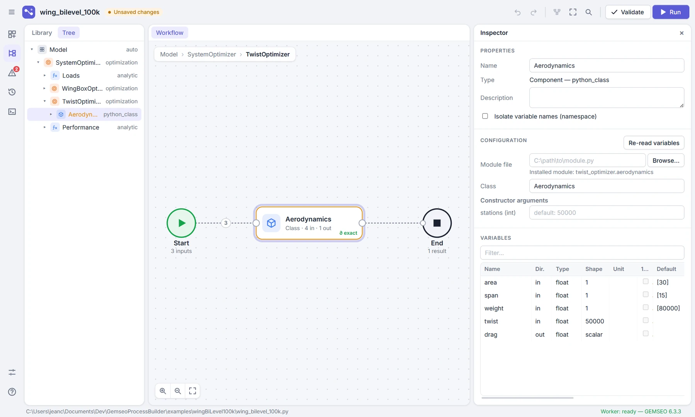
twist is an input of 50,000 values, and the badge ∂ exact says that the discipline computes its own derivatives.3Where we started: a bi‑level wing on surrogates
The first study, examples/wingBiLevel, has one local variable per discipline: the camber of the airfoil for the aerodynamics, the thickness of the wing box for the structure. Each discipline has a normal model, which stands for a costly solver, and a surrogate trained on it: a radial basis function (RBF) regression on 200 samples drawn by Latin hypercube sampling.
It uses GEMSEO's BiLevel formulation, the textbook way to split a design between a system and its disciplines:
- SystemOptimizer chooses the area and the span to maximize the range, with a wing loading of at most 3,000 N/m². Its algorithm is COBYLA, which needs no derivatives.
- AeroOptimizer chooses the camber giving the least drag, with SLSQP, on the Aero surrogate.
- StructureOptimizer chooses the thickness giving the lightest aircraft, with SLSQP, on the Structure surrogate.
- Performance computes the range and the wing loading from the weight and the drag.
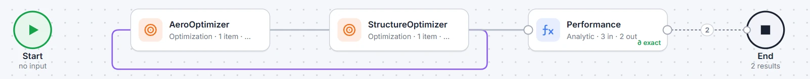
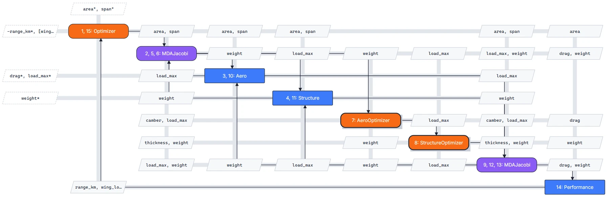
The surrogates are fast but approximate, so the study wraps the optimization in a loop of trust: optimize on the surrogates; evaluate the optimum on the normal models; if the range differs by more than 1 %, let the surrogates learn 20 more samples around that optimum and optimize again.
| Round | Evaluations | Time | Range, surrogates | Range, normal models | Gap | Verdict |
|---|---|---|---|---|---|---|
| 1 | 46 | 3.1 s | 3,459.7 km | 3,395.9 km | 1.88 % | learn 20 samples around the optimum |
| 2 | 51 | 5.9 s | 3,437.0 km | 3,444.0 km | 0.20 % | confirmed by the normal models |
This works because everything is small: two shared and two local variables, surrogates of four inputs, and a system optimizer that only needs values. Its range, near 3,400 km, is not comparable with the rest of the page: the final study uses other, richer models.
4What breaks at 100,000 variables
Now replace the camber by the twist of 50,000 sections, and the single thickness by the skin thickness at 50,000 stations. Every ingredient of the first study fails, each for a reason worth understanding:
- A surrogate cannot learn a function of 50,000 inputs. No practical number of samples fills a space of 50,000 dimensions; a regression on 200 of them predicts nothing. The models themselves must be fast, and they can be: one drag evaluation takes half a millisecond.
- Optimizers without derivatives need too many evaluations. COBYLA builds its linear models from n + 1 points: 50,001 evaluations before its first real step. Gradient-based optimizers take far fewer steps but need the gradient, and finite differences cost one extra run per variable: 50,001 runs per gradient.
- GEMSEO's BiLevel formulation hands the system too much. Each sub-optimization gives the system level its local optimum, here 100,000 values, along with the couplings. GEMSEO's post-optimal analysis differentiates only the objective of a sub-optimization, so the system has no gradient for the rest and must go without derivatives again.
- The weight–load loop multiplies the work. To make the weight and the load consistent, an MDA reruns the structural optimization several times per system evaluation.
- Harmless details become walls. GEMSEO prints the design space as a table with one row per variable at the start and end of every optimization; the computation of Lagrange multipliers stores the active bounds as a dense matrix of size (active bounds × variables).
5The final form
The final study, examples/wingBiLevel100k, keeps two levels of optimization but builds them by hand. One evaluation of the system level runs through five blocks, once each, in this order:
design_weight to maximize the range, with wing_loading ≤ 3000 and weight_margin ≤ 0load_max = 2.5 × design_weightrange_km, wing_loading and weight_margin = weight / design_weight − 1In GEMSEO, each sub-optimization is an ordinary scenario wrapped by an adapter, and the system level is an ordinary MDF scenario over four disciplines:
# twist_optimizer/__init__.py
design_space.add_variable("twist", size=STATIONS, lower_bound=-90.0, upper_bound=90.0, value=0.0)
scenario = create_scenario([Aerodynamics()], "drag", design_space,
name="TwistOptimizer", formulation_name="DisciplinaryOpt")
scenario.set_algorithm(algo_name="L-BFGS-B", max_iter=200, ftol_rel=1e-10, xtol_rel=1e-10,
log_problem=False, enable_progress_bar=False)
return MDOScenarioAdapter(scenario, ["area", "span", "weight"], ["drag"])
# wing_bilevel_100k.py
scenario = create_scenario(
[build_loads(), build_wing_box_optimizer(), build_twist_optimizer(), build_performance()],
"range_km", build_design_space(), name="SystemOptimizer",
maximize_objective=True, formulation_name="MDF")
scenario.add_constraint("wing_loading", constraint_type="ineq", value=3000.0)
scenario.add_constraint("weight_margin", constraint_type="ineq")
scenario.execute(algo_name="SLSQP", max_iter=50, ftol_rel=1e-6)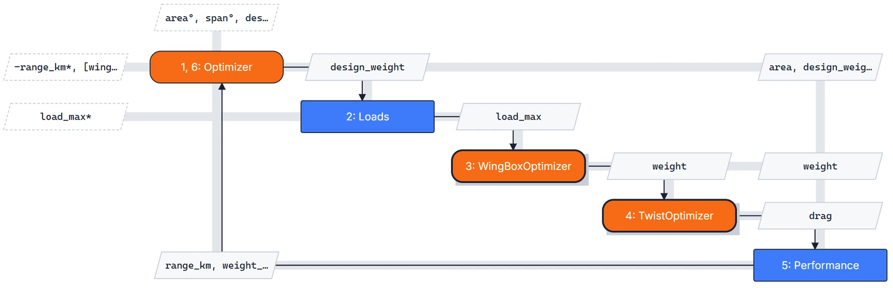
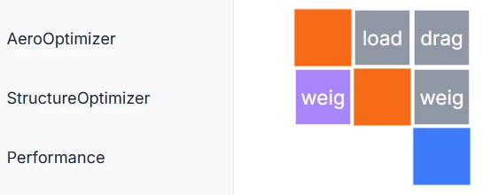
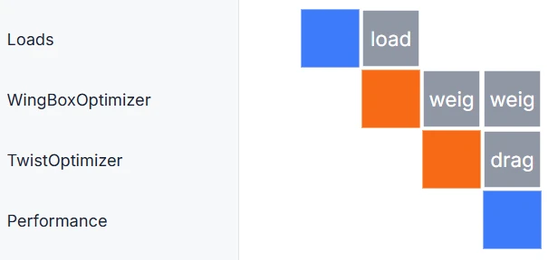
The application shows each optimization in an editor with one tab per concern. Four of them tell the essentials of the final form:
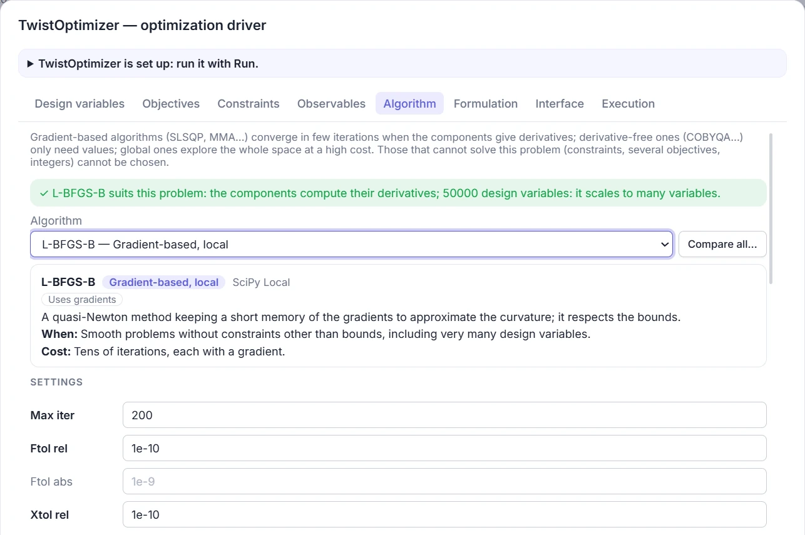
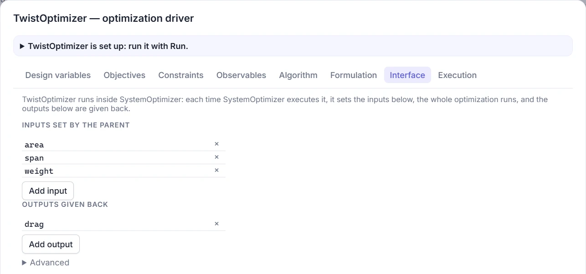
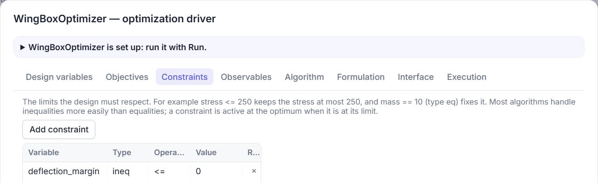
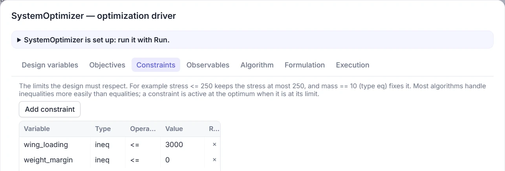
6Seven decisions
Each decision below answers one of the walls of section 4. Each comes with the evidence that it was needed, measured on the study itself.
Make every gradient exact, and cheap
- Problem
- With finite differences, a gradient over 50,000 variables costs 50,001 runs of the discipline.
- Decision
- Each discipline computes its own derivatives, in closed form, in one pass over its sections.
- Effect
- A gradient costs 1.5 ms instead of 24 s. The whole study takes 24 s instead of about four hours.
The aerodynamics is strip theory. The lift coefficient of each section is the wing's, plus the lift slope times its twist relative to the mean twist. Two drags compete: the profile drag of each section grows with the square of its lift coefficient, so it wants the same lift everywhere; the induced drag grows with the distance to the ideal, elliptic spread of lift, so it wants less lift toward the tip. The structure uses the unit load method: the tip deflection is a sum over the stations of the bending moment times the moment of a unit load at the tip, over the stiffness of the box, which grows with the skin thickness.
In both models, the derivative with respect to the variable of one section involves that section and a few sums over all sections. The whole gradient is a handful of vector operations, as cheap as the function itself:
# twist_optimizer/aerodynamics.py, in Aerodynamics._compute_jacobian
weighted_gap = f.gap * self.chord
d_spread = 2 * self.width * LIFT_SLOPE / f.lift * (weighted_gap - self.weights * weighted_gap.sum())
d_twist = (2 * PROFILE_FACTOR * LIFT_SLOPE * self.weights * (f.section_lift - f.lift)
+ induced_factor * d_spread + 2 * TWIST_COST * self.weights * f.twist)
jacobian["twist"] = (pressure_area * d_twist)[None, :] # 50,000 derivativesGive each problem the optimizer that fits its shape
- Problem
- Three problems of different shapes: 50,000 variables with bounds only; 50,000 variables with one constraint; three variables with two constraints.
- Decision
- L-BFGS-B for the twists, MMA for the thicknesses, SLSQP for the system level.
- Effect
- From scratch, each sub-optimization converges in about 25 iterations and under a second; restarted from its last optimum, in 4 or 5.
- L-BFGS-B is a quasi-Newton method: it estimates the curvature of the function from the last few gradients instead of storing a 50,000 × 50,000 matrix, and it respects bounds. It is the method of choice for smooth problems with many variables and no constraint.
- MMA, the method of moving asymptotes, replaces each function by a sum of simple terms in 1/(U − x) and 1/(x − L), one per variable. Such approximations stay cheap with 50,000 variables, and a tip deflection, a sum of terms in 1/thickness, has exactly that shape.
- SLSQP, sequential quadratic programming, is an active-set method: at each iteration it guesses which constraints are active and solves a quadratic model of the problem with them. It suits a few variables and a few constraints with accurate gradients.
TwistOptimizer · L-BFGS-B
WingBoxOptimizer · MMA
Nest each sub-optimization as a black box that returns its optimum, with its derivatives
- Problem
- The system's gradient needs the derivatives of the optimal weight and the optimal drag with respect to area, span, load and weight. Finite differences would rerun whole optimizations, and be noisy.
- Decision
- Each sub-optimization is an
MDOScenarioAdapterwhose only output is its optimum. GEMSEO's post-optimal analysis derives it from the multipliers of the active set. - Effect
- 28 sensitivity computations take 0.4 s in all, and agree with finite differences to 10−5 for area and span, and to 1 % for the design weight.
Take an optimization that minimizes f(x, p) over x under constraints g(x, p) ≤ 0, for given inputs p. At its optimum, the derivative of the optimal value with respect to the inputs needs no new optimization:
The two sub-optimizations show the two halves of this formula:
- TwistOptimizer has no active constraint. The derivative of the optimal drag is just the partial derivative of the drag at the optimal twists: re-optimizing the twists after a small change of weight would change the drag only to second order. This is the envelope theorem: d drag*/d weight = 0.0971.
- WingBoxOptimizer has one active constraint, the deflection, with multiplier λ = 11,550 N. The weight does not depend on the load directly; its derivative comes entirely from the constraint: λ × ∂margin/∂load = 11,550 × 1/188,482 = 0.0613 N of weight per newton of load. The multiplier also reads as a price: relaxing the deflection limit by 1 % would save about 115 N.
Optimal weight vs maneuver load
Optimal drag vs weight
| Derivative at the system optimum | Post-optimal analysis | Finite differences | Relative gap |
|---|---|---|---|
| range / area (km per m²) | −1.97520 | −1.97514 | 3 × 10⁻⁵ |
| range / span (km per m) | 29.2015 | 29.2014 | 3 × 10⁻⁶ |
| range / design weight (km per N) | −5.362 × 10⁻³ | −5.301 × 10⁻³ | 1.1 % |
| weight margin / area (per m²) | −3.5492 × 10⁻³ | −3.5494 × 10⁻³ | 6 × 10⁻⁵ |
| weight margin / span (per m) | 5.4958 × 10⁻² | 5.4959 × 10⁻² | 3 × 10⁻⁵ |
| weight margin / design weight (per N) | −1.1233 × 10⁻⁵ | −1.1230 × 10⁻⁵ | 3 × 10⁻⁴ |
The finite differences use steps of 0.1 % around the optimum, at full scale. The derivative of the range with respect to the design weight flows entirely through the multiplier of the wing box, whose accuracy follows the convergence of MMA: 1 % is plenty for SLSQP, which converged all the same.
The adapter's inputs and outputs are all it takes: MDOScenarioAdapter(scenario, ["area", "span", "load_max"], ["weight"]). When the system asks for the adapter's derivatives, GEMSEO runs its post-optimal analysis on the last optimum. The demo's sensitivities.py prints the active sets and multipliers behind them.
Cut the loop: let the system choose the weight the structure is designed for
- Problem
- Weight → load → weight is a loop: an MDA reran the wing box optimization about seven times per system evaluation.
- Decision
- A design weight becomes a system variable, the loads follow from it, and
weight / design_weight − 1 ≤ 0makes the weights agree at the optimum. - Effect
- One run of each sub-optimization per system evaluation. At 2,000 stations: 20 wing box optimizations instead of 212, and 1.2 s instead of 8.5 s, for the same optimum.
Why does the constraint end up active? A heavier design weight means a heavier maneuver load, a heavier wing box and a shorter range, so the optimizer lowers the design weight until the actual weight reaches it. The trick is the one of the IDF formulation: a coupling variable becomes a design variable, and a constraint enforces consistency where it matters, at the optimum.
Constrain what the optimizer can model: the tip deflection, not 50,000 stresses
- Problem
- The first wing box limited the stress at each station, aggregated into one smooth maximum (a KS function). MMA oscillated; GEMSEO's augmented Lagrangian converged, in about three minutes at 2,000 stations.
- Decision
- A stiffness requirement instead: the tip deflects at most 4 % of the half-span. Its value is a sum of terms in 1/thickness.
- Effect
- MMA converges in about a dozen iterations. After 150, both KS variants were still beyond their limit.
A Kreisselmeier–Steinhauser (KS) function turns many constraints into one smooth approximation of their maximum; a parameter ρ sets how closely it follows the true maximum. Accurate means a large ρ, and a large ρ means a function that bends sharply wherever the most stressed station changes: exactly what a separable approximation like MMA's cannot follow.
Keep every bound inactive, and every variable close to 1
- Problem
- The multipliers need a dense matrix of the active bounds, 400 kB per active bound. And the thickness a wing needs spans three orders of magnitude over the system design space, driving thousands of thicknesses onto their bounds.
- Decision
- Thicknesses relative to a reference that follows the wing, and bounds far from any optimum: 0.01 to 10 for the relative thicknesses, ±90° for the twists.
- Effect
- At every corner of the system design space, the optimal relative thicknesses stay between 0.24 and 1.74: no active bound, an empty matrix, and MMA restarts close to its answer.
To compute the multipliers, GEMSEO gathers the gradients of the active bounds into one dense matrix with a row per active bound and a column per variable. With 50,000 variables, each row takes 400 kB: all bounds active means 20 GB, the MemoryError met while prototyping; a few thousand mean gigabytes and a least-squares solve that did not finish.
The reference is the uniform thickness meeting the deflection limit on the current wing under a load of 200 kN. The thickness a wing needs grows like the load × span⁵ / area³; divided by the reference, it stays of order one whatever the wing:
Absolute thickness (mm), log scale
Relative thickness
Stop when the answer is as good as it can be
- Problem
- Settings tuned for small problems made the optimizers chase noise, and hid the active set.
- Decision
- Tolerances matched to what each level can actually resolve, and a margin scaled to the tolerance of the active set.
- Effect
- SLSQP stops after 14 iterations, and the report finds the active constraints and their multipliers.
- MMA stops at 30 iterations. It reaches 10−5 of the optimal weight in 20 to 25, then dithers around the active constraint without meeting a tighter criterion.
- SLSQP stops at a relative change of 10−6, the precision of the optima it receives from below; asking for more makes it chase that noise.
- The weight margin is relative:
weight / design_weight − 1. In newtons, the margin at the optimum (−0.03 N) was outside the tolerance that decides whether a constraint is active, and the constraint went unreported. log_problem=Falseon the sub-optimizations: no table of 50,000 rows printed at the start and end of each of the 64 optimizations, which alone took minutes.
7The result
Run as a script, the study prints its own report at the optimum: the system variables, then for each level its active set, its multipliers and, for the sub-optimizations, the sensitivities of their optima.
SystemOptimizer: 14 iterations (32 evaluations) in 24 s, range 2040.4 km area 34.6049, span 13.9387, design_weight 75392.7 active set: weight_margin (multiplier 501.8); 0 of 3 bounds WingBoxOptimizer: 50000 variables active set: deflection_margin (multiplier 1.155e+04); 0 of 50000 bounds sensitivities of the optimal weight: d/d area -267.6, d/d load_max 0.06128, d/d span 4143 TwistOptimizer: 50000 variables active set: no constraint; 0 of 50000 bounds sensitivities of the optimal drag: d/d area 29.01, d/d span -445.6, d/d weight 0.09707
The optimal wing has an area of 34.6 m² and a span of 13.9 m. It weighs 75,393 N, exactly its design weight since the weight margin is active, and its drag is 5,216 N: a lift-to-drag ratio of 14.5. Its wing loading, 2,179 N/m², stays clear of the 3,000 limit. The multiplier of the weight margin puts a price on weight: about 5 km of range per percent of margin.
Run from the application, the same study gives the same optimum in 29 s, and the results views show its history and its gradients as it goes:
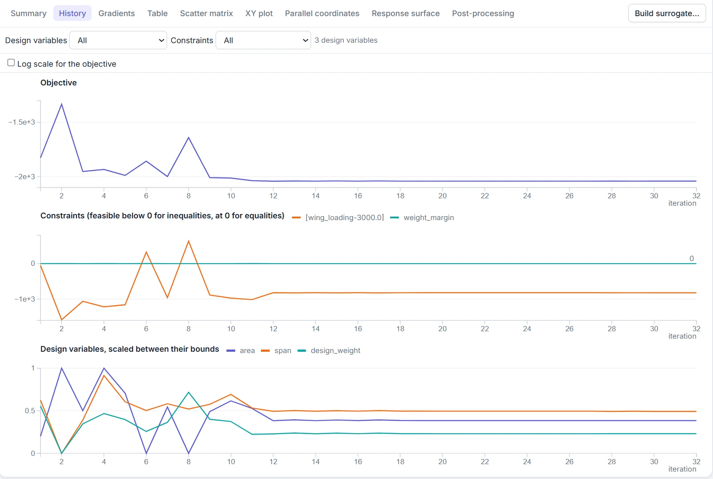
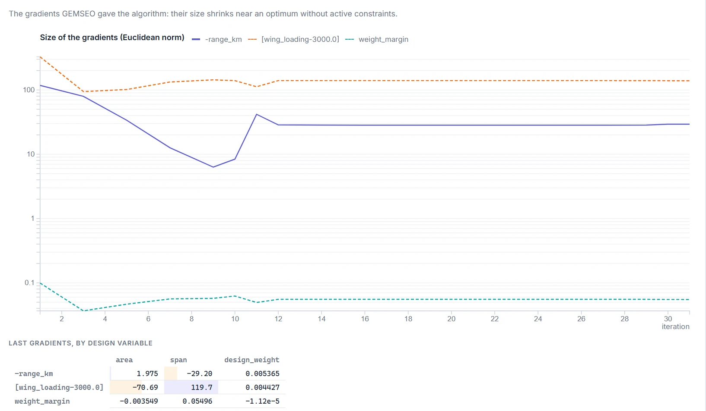
What the 100,000 variables did
Twist (°)
Lift along the span
Skin thickness (mm)
Where the 24 seconds go
How it scales
8What to take away
- At scale, the price of a gradient decides everything. Exact derivatives that cost as much as the function turn hours into seconds.
- Choose each optimizer for the shape of its problem: L-BFGS-B for many variables with bounds, MMA for many variables with a few separable constraints, SLSQP for a few variables with constraints.
- Nest optimizations as black boxes that return only their optimum. Post-optimal sensitivities then give the level above exact enough gradients for almost nothing: 0.4 s out of 24.
- Break loops around expensive blocks with a target variable and a consistency constraint, when each turn of the loop is an optimization.
- Formulate constraints the optimizer can model. One smooth, separable requirement beats thousands of aggregated ones.
- Scale variables to order one, and keep optima away from their bounds. It helps the optimizer and it keeps the tools' dense matrices empty.
- Surrogates are for few inputs and expensive models. With many inputs, invest in the model's derivatives instead.
AGlossary and files
Algorithms and terms
- COBYLA
- Constrained optimization by linear approximations: a derivative-free method that interpolates the functions linearly from n + 1 points.
- SLSQP
- Sequential least-squares quadratic programming: a gradient-based active-set method for constrained problems.
- L-BFGS-B
- Limited-memory BFGS with bounds: a quasi-Newton method for smooth problems with many variables and bound constraints.
- MMA
- Method of moving asymptotes: approximates each function by separable convex terms; GEMSEO calls NLopt's implementation,
NLOPT_MMA. - KS function
- Kreisselmeier–Steinhauser: a smooth upper approximation of the maximum of many functions, sharper as its parameter ρ grows.
- MDF, IDF, BiLevel
- MDO formulations: one optimizer and an MDA at every point; one optimizer with couplings as design variables and consistency constraints; a system optimizer over sub-optimizations.
- Envelope theorem
- At an optimum, the derivative of the optimal value with respect to an input equals the partial derivative of the Lagrangian: re-optimizing contributes nothing at first order.
- RBF, LHS
- Radial basis function regression; Latin hypercube sampling, which spreads samples evenly along each input.
Files and blocks
File in examples/wingBiLevel100k | Block of the graph | What it holds |
|---|---|---|
wing_bilevel_100k.py | SystemOptimizer | design space, MDF scenario, constraints, SLSQP |
flight.py | Loads, Performance | the analytic disciplines of the system level |
twist_optimizer/ | TwistOptimizer, Aerodynamics | the adapter; strip theory with its exact Jacobian |
wing_box_optimizer/ | WingBoxOptimizer, WingBox | the adapter; unit load method with its exact Jacobian |
sensitivities.py | — | the report of active sets, multipliers and sensitivities |
Reproduce
cd examples/wingBiLevel100k
python wing_bilevel_100k.py # about 25 s, prints the report above
cd ../wingBiLevel
python wing_bilevel.py # about 11 s, trains the surrogates the first timeBoth demos also open in GEMSEO Process Builder, from the Demos section of its Library or with python -m gemseo_process_builder examples/wingBiLevel100k/wing_bilevel_100k.py. For now, running the 100k study from the application needs its folder on the Python path (PYTHONPATH), because its disciplines live in sub-packages of that folder.